Šipon
LETNIKI 2021 DO 2025
Naša najstarejša sorta. Vino z edinstveno nežno cvetico, ki spominja na kutine, hruške ali limone; polnega okusa, s prijetno svežino, in se odlično stara.
Jeruzalem, Ormož, Štajerska Slovenija
Verus pomeni pravi, resničen, dejanski, tudi iskren, pristen, nenarejen, pošten. S svojim znanjem in natančnim delom v vinogradu in kleti pridelujemo vina, ki resnično izražajo lastnosti sorte, letnika in našega vinorodnega okoliša.
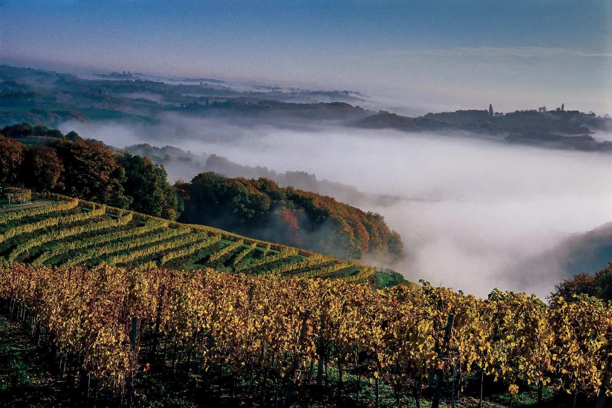
Vinogradi
Naši vinogradi se nahajajo v vzhodni Sloveniji, v vinorodnem okolišu Štajerska Slovenija. Razprostirajo se med Dravo in Muro ter mestoma Ormož in Ljutomer, med 46°24' in 46°31' severne širine ter 16°05' in 16°19' vzhodne dolžine. To je najtoplejši in najbolj suh del Štajerske.
Tla so lahka, peščeno-ilovnata, lapornata in dobro odcedna. V vinogradih prevladujejo sivi laporji in apneni peščenjaki. Vinograde obdelujemo trajnostno, skladno s smernicami za integrirano pridelavo grozdja, ki jo nadzoruje akreditirana institucija.
| Lega | Nadm. višina | Površina | Sorte |
|---|---|---|---|
| Jeruzalem | 341 m | 19,8 ha | sauvignon, šipon, renski rizling, sivi pinot, modri pinot |
| Brebrovnik | 320 m | 3,2 ha | sauvignon |
| Pavlovski vrh | 290 m | 2,8 ha | sauvignon, rumeni muškat |
| Kog | 321 m | 2,5 ha | sauvignon, renski rizling, chardonnay |
| Ivanjkovci | 311 m | 2,5 ha | sauvignon, šipon, renski rizling, modri pinot |
| Litmerk | 331 m | 2,4 ha | sauvignon, rumeni muškat, chardonnay |
| Radomerje | 311 m | 0,8 ha | sauvignon, sivi pinot |
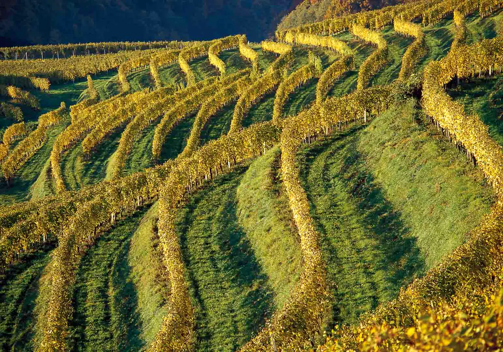
Terase okrog vasi Jeruzalem. Sonce sije 2600 do 2800 ur na leto, padavin je od 900 do 1000 mm, trgatev poteka v povprečju od druge polovice septembra do srede oktobra.
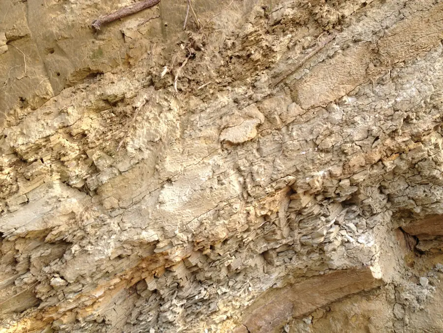
Sivi lapor. Matična osnova so terciarne mehke karbonatne kamnine iz obdobja pliocena in miocena.
Trajnostna pridelava
Na strmih pobočjih preprečuje erozijo in omogoča rastišče, kjer trta pri zmernem pridelku ne potrebuje gnojenja. Gnojil ne uporabljamo.
Dobra osončenost in zračnost listne stene, uravnotežena rast in količinsko zmeren pridelek.
Na najbolj strmih legah terase z 2.000 trsi/ha, na nagibih pod 30 % vertikalni vinogradi s 4.000 trsi/ha.
Odbiramo popolnoma zrelo in zdravo grozdje. Do kleti ga pripeljemo ohlajenega v majhnih zabojih v klimatiziranem vozilu.
6 do 8 t/ha, 1,5 do 2,5 kg na trs, odvisno od letnika, sorte in starosti vinograda.
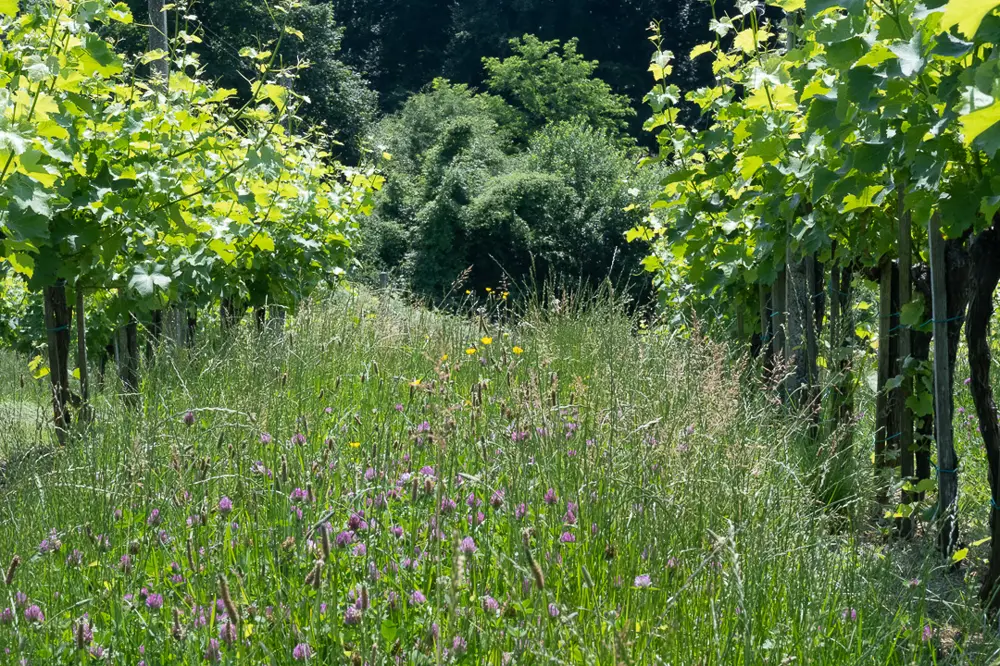
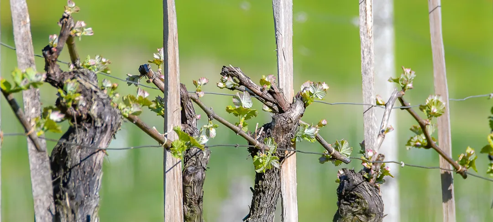

Vina
Pridelujemo zrela, harmonična vina z intenzivno cvetico in jasno izraženo sortnostjo. Verjamemo, da je kakovost vina odvisna izključno od kakovosti grozdja. Opisi vin so vaši, z vaše strani.
LETNIKI 2021 DO 2025
Naša najstarejša sorta. Vino z edinstveno nežno cvetico, ki spominja na kutine, hruške ali limone; polnega okusa, s prijetno svežino, in se odlično stara.
LETNIKI 2021 DO 2025
Iz več vinogradov, starih in mladih, na vzhodnih, južnih in zahodnih legah. Vonj po bezgovem cvetju, kosmuljah, tropskem sadju, koprivah, papriki, črnem ribezu ali pokošeni travi. Sveže, harmonično, polnega okusa.
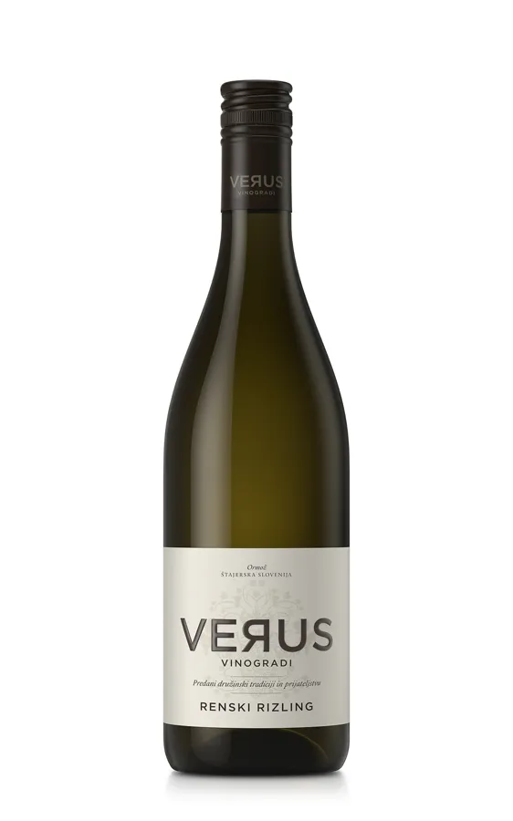
LETNIKI 2021 DO 2025
Vinogradi, stari prek 30 let, rodijo malo. Mlado vino ima svežo sadno aromo vinogradniške breskve in akacijevega cvetja, s staranjem pa arome medu, cimeta ali suhih marelic.

LETNIKI 2021 DO 2025
Prijetna cvetica, v kateri se prepletajo nežne cvetlične arome in tropsko sadje. Okus je bogat in poln.
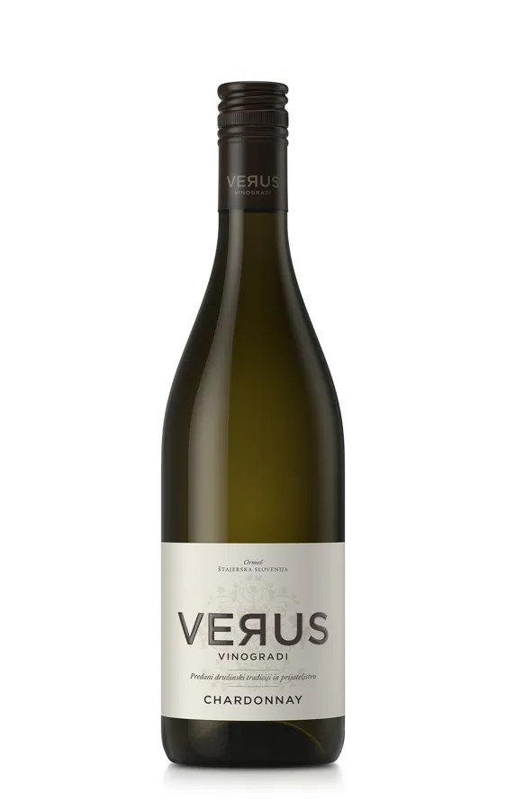
LETNIKI 2021 DO 2025
Mamljiva sadna cvetica, ki lahko spominja na jabolka, hruške, melone, ananas, banane ali agrume. V okusu polno in elegantno.

LETNIKI 2021 DO 2025
Zahteva odlične lege in lahka, kamnita ali peščena, zračna tla. Izjemno aromatično in bogato vino z značilno cvetico po muškatu in pomarančah.

LETNIKI 2016, 2017, 2019, 2020
Naša edina rdeča sorta, prvič posajena leta 2009 na legah Stanovščak in Litmerk. Rubinasto rdeča barva, cvetica malin, jagod, češenj ali ribeza, skladen, poln, zrel okus.
Za vsak letnik je na vaši strani tehnični list (PDF). V prenovi jih prenesemo kot prenosljive dokumente pri vsakem vinu.
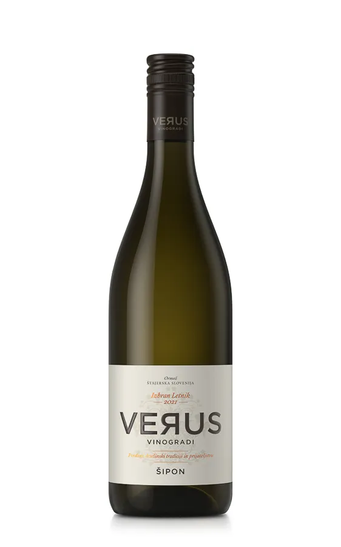

Serija Izbran letnik
Nekateri letniki izstopajo tako, da si zaslužijo posebno pozornost. Na podlagi vremenskih razmer, kakovosti grozdja in spremljanja zorenja vina v steklenici smo za prvi polnitvi serije izbrali šipon letnik 2021 in modri pinot letnik 2018. Šipon 2021 je napolnjen v 0,75 l in v 1,5 l magnum steklenice, modri pinot 2018 le v 1,5 l magnum steklenice.
Letniki
Zaradi nenehne menjave toplih, hladnih, deževnih in sončnih obdobij se letniki med seboj zelo razlikujejo. Od začetka rastne dobe do konca trgatve dnevno spremljamo vreme in na podlagi meteoroloških podatkov ter dolgoletnih izkušenj odločamo o vseh opravilih, še posebej pozorno o optimalnem času trgatve.
Zima 2025 je bila blaga. Sedmega aprila so se temperature v dolinah spustile pod ledišče, na višjih legah, kjer so naši vinogradi, pa so ostale tik nad 0 °C, zato spomladanske pozebe ni bilo. Cvetenje se je začelo 1. junija. Sredi avgusta je bilo vroče in sušno, 10. in 16. avgusta je temperatura dosegla 36 °C.
S trgatvijo smo začeli 26. avgusta, kar je drugi najzgodnejši začetek do zdaj. Grozdje je bilo zdravo in optimalno dozorelo pri vseh sortah. Pridelek je bil količinsko nekoliko večji kot v preteklih letih.
Na vaši strani so zapisi za letnike od 2021 do 2025; v prenovi jih ohranimo kot arhiv letnikov.
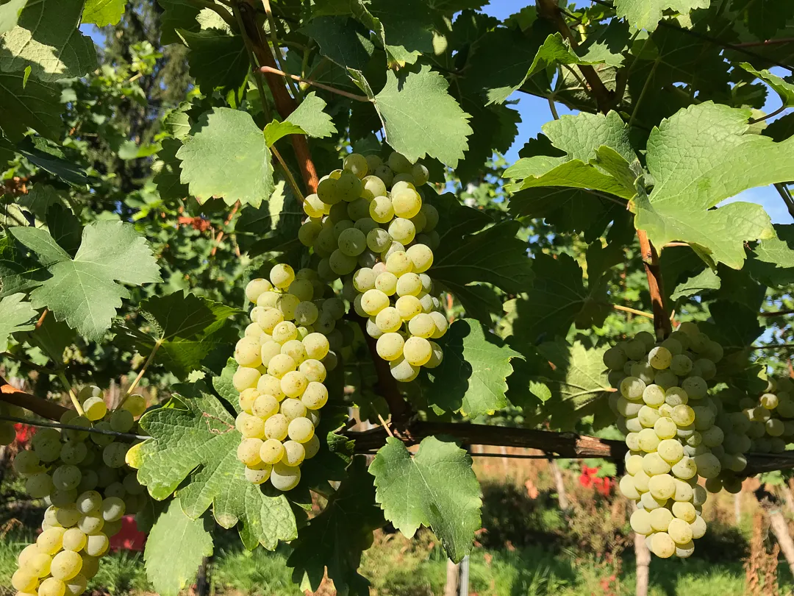
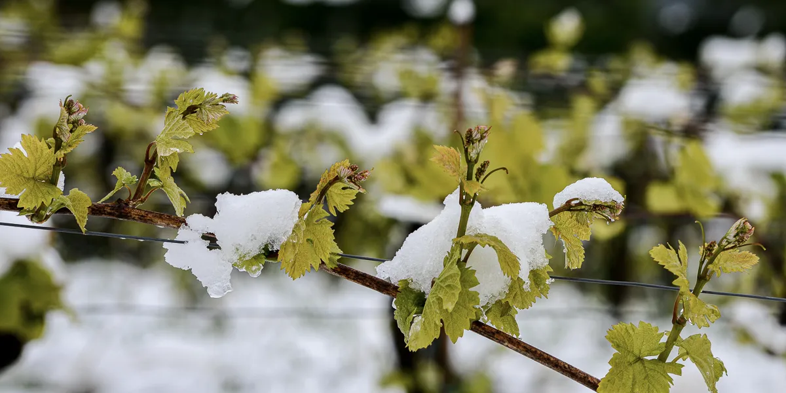
Hladne zime pomenijo nevarnost pozeb, vroča poletja s pogostimi nevihtami pa nevarnost toče.
Objave
Citati in datumi so povzeti z vaše strani Objave. Po navedbah podjetja je Verus naveden tudi v 7. izdaji knjige The World Atlas of Wine (Hugh Johnson, Jancis Robinson, 2013).
So izjemno čista, polna življenja in imajo izjemno svežino. Vsa so zelo dobri predstavniki sort, a meni je najljubši šipon.
Čudovita sortnost, tako čista in močno izražena! Kot eksplozija zrelih grozdnih jagod v ustih. Izjemna harmonija in vitalnost. Pravo poletno vino.
Čeprav je suh, ima cvetlični značaj, ki ga doslej nisem še nikjer srečala. To vino je lahko popoln aperitiv, odlično se poda tudi k lažjim jedem, kot je perutnina ali solata s kozicami.
Zgodba
Verus smo ustanovili trije prijatelji. Združili smo družinske vinograde, znanje in delo ter spomladi 2007 v prostorih nekdanje ormoške pekarne opremili vinsko klet. Skupna nam je predanost družinski tradiciji: že naši starši in stari starši so bili tesno povezani z vinogradi in vinom.
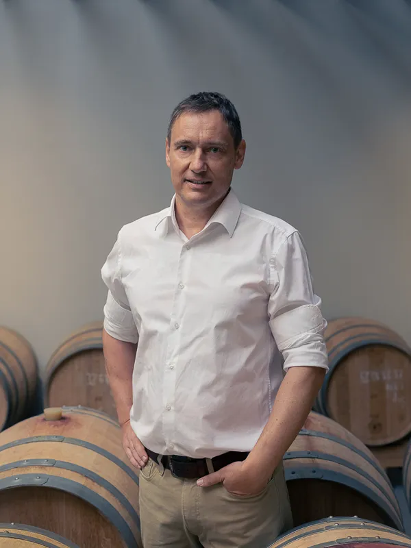
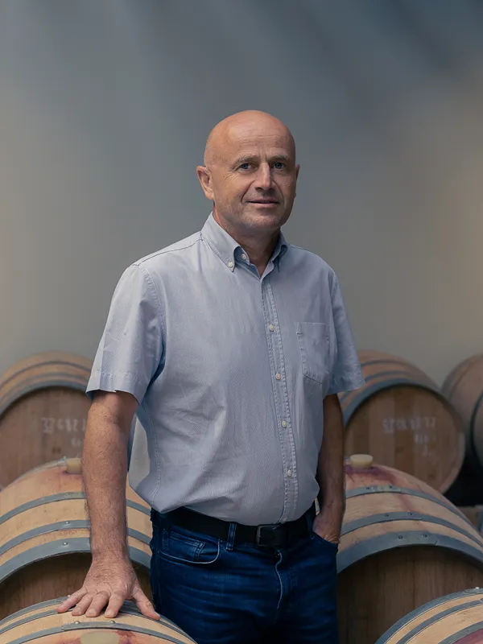
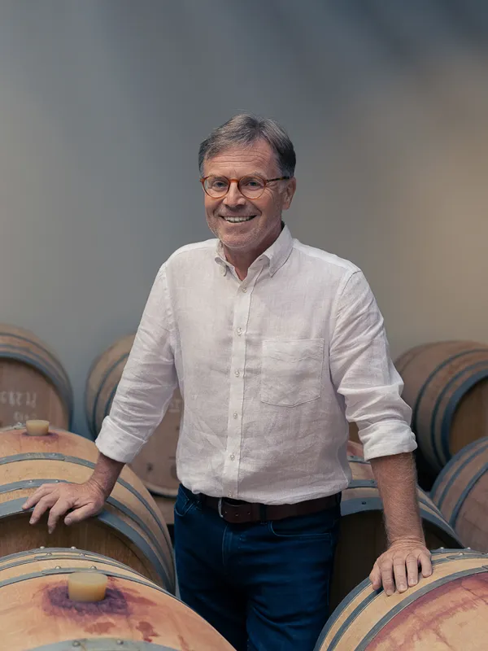
Mejniki po navedbah podjetja (verusvino.com/novice). Matična številka 5585511000, v sodnem registru od 2. 4. 1992 (bizi.si).

Obisk in nakup
Vodeni ogledi kleti z degustacijo so na voljo ob predhodni najavi in rezervaciji termina.
Verus Vinogradi d.o.o.
Ljutomerska cesta 36, 2270 Ormož
Prikaži na zemljevidu (OpenStreetMap)
Verus vina najdete v številnih vinotekah in restavracijah v Sloveniji in, po navedbah podjetja, v več kot 20 drugih državah: Avstrija, Belgija, Bolgarija, Bosna in Hercegovina, Danska, Estonija, Finska, Hrvaška, Irska, Italija, Latvija, Litva, Madžarska, Nemčija, Nizozemska, Srbija, Švedska, Švica, Združeno kraljestvo, Kanada, ZDA.
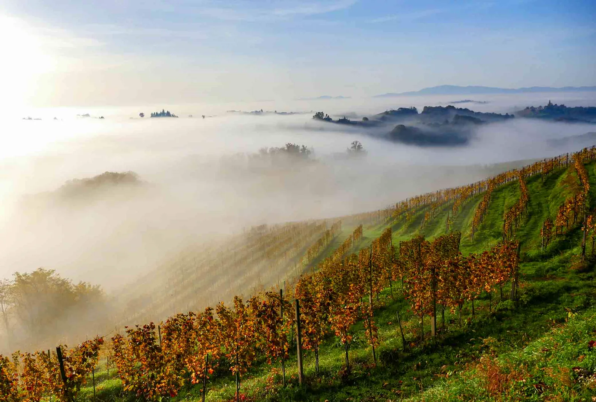